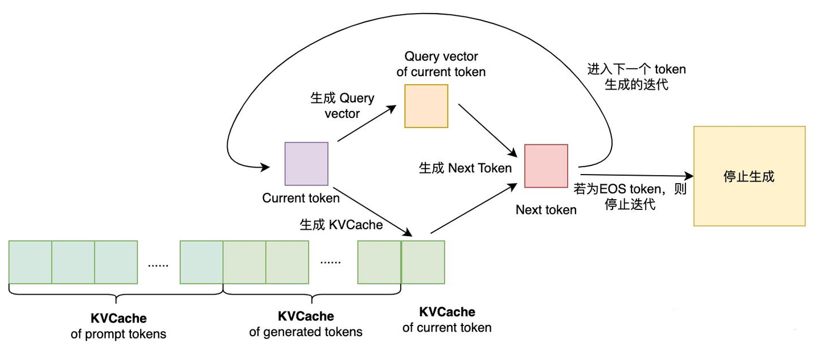
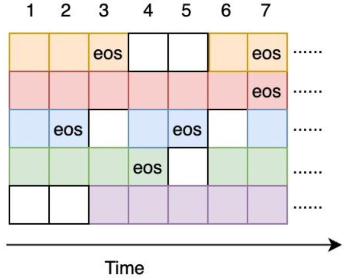

LLM Serving
1. LLM特点
1.1 自回归模型简介
LLM最核心的模块是自回归的Transformer模型。自回归模型可通过序列的联合条件概率公式表示：
如公式所示，自回归模型生成文本时需要计算多个时刻的条件概率。在实际模型运行时，自回归模型生成文本需要经过多轮迭代生成完整文本。生成文本的流程可以抽象为生成token的循环，循环内部主要分为以下两个步骤：
- 生成下一个token。每次迭代需要根据模型的文本输入 (Prompt)以及已生成的tokens上文信息，计算出下一个token的生成概率，即，最后通过采样或者搜索策略找出本次迭代生成的token。
- 判断是否结束生成循环。当生成一个结束符标志 (EOF token)，表示模型已经完成该请求，此时跳出循环。另外，受制于GPU显存大小、模型长文本生成效果等因素，一般结束条件还包括最大生成长度 (
max_dec_length)。
所以，基于自回归模型的LLM生成文本过程是一种基于迭代的串行操作，是一种内存受限 (memory-bound)操作 (计算访存比较低，模型权重访问频繁)，其性能瓶颈主要在访存上。这样使得GPU的计算能力没法得到充分利用，从而影响LLM服务的吞吐。
1.2 KV Cache的来源
自回归Transformer通过SelfAttention机制建模。SelfAttention流程主要可分为三个步骤：
- 将输入的序列映射到三个向量空间中，分别得到三个向量。
- 计算向量注意力得分，得到注意力得分，表示第个位置的token和第个位置 ()的token的得分。个注意力得分组成一个向量，表示第个位置的token和其余位置之前所有位置token的得分向量。
- 注意力得分向量与做内积，得到SelfAttention的最终输出。
通过上述公式可知，对于自回归Transformer来说，在计算时，除了需要计算得到的，还需要。由于之前迭代生成第j个token时已经计算过，并且后续迭代生成可以直接复用，所以自回归的Transformer模型都使用缓存的方式将计算过的向量缓存到显存中，避免每次迭代重复计算上文向量。这就是KV Cache。
2. LLM服务
吞吐是LLM服务最重要的性能指标之一，提升LLM服务的吞吐可以降低服务部署成本。提升模型服务的吞吐最直观的方式是将尽量多的请求合并成一个模型输入 (即batching)，使单次推理能完成尽量多的请求计算。因为对一个合并请求单次推理可以共享模型权重，多个请求推理只需访问一次权重，计算访存比提升，访存开销能被batch请求所增加的计算开销覆盖，所以单次推理合并越多请求，吞吐越高。对于模型服务来说，单次推理最大合并请求数主要受显存制约。所以，提升模型服务吞吐这个研究话题可以转变成在显存一定的情况下，提升单次推理最大合并请求数。这也是LLM服务最关注的问题。
2.1 LLM服务WorkFlow
在LLM服务中，用户一个请求包含一个输入的prompt tokens，即一段文本，服务生成个tokens，并将tokens合并成一段文本返回客户端。如上文自回归模型的介绍，LLM 服务需要逐token生成。由于KVCache主要用于加速生成token时的attention计算，而生成第一个token时并不存在KVCache，无法直接使用prompt的KVCache进行attention计算，所以LLM服务生成文本的流程主要分为两个阶段：Prompt阶段 (生成第一个token，在TGI里也称Prefill阶段)以及Decode阶段 (生成第二及后续token)。
2.1.1 Prompt阶段

2.1.2 Decode阶段

2.2 Batching策略
如上文提到，Batching能提升模型服务的吞吐。常规的模型服务的Batching策略如下：
- 设置一个Batching延时以及最大Batch Size；
- 收到新请求时，将请求入队，并判断请求队列中的请求数是否达到最大Batch Size或者最早请求与最迟请求的到达时间差是否达到Batching延时，如果条件满足，则执行第3步骤，否则继续休眠直至Batching超时或者新请求到达；
- 对合并后的模型输入进行模型推理，得到完整的模型结果，将结果返回客户端，服务返回步骤2的状态，等待下一个Batch的请求。
对于生成式的LLM模型服务来说，使用常规的模型服务Batching策略会有两个问题：
- 请求端到端延时提升。论文里提到两个延时：Batching延时以及请求在队列里的等待延时。在高并发场景下，请求在队列的等待耗时约等于前序批次请求的推理耗时总和。由于大模型是自回归模型，推理耗时主要在Decode阶段。Decode阶段的耗时与生成的tokens数 (迭代次数)成正比。生成文本长度越长，Decode耗时越长。生成单个token耗时在毫秒级别，那么生成千级别token数Decode耗时基本在秒级别，所以等待延时可达秒级别。线上服务基本无法接受这么长的请求等待延时。
- GPU计算、存储资源有效利用率低。模型输入输出的长度不一致。文本长度不一致对模型输入和输出端的影响不同：
- 对于模型输入而言，由于文本输入长度不同，在构造模型输入的时候需要进行padding预处理，那么在进行模型推理的时候就会引入对padding位的计算，浪费了GPU计算资源 (不过现在已经有一些变长推理优化策略解决这个问题[2])。
- 推理引擎需要将batch内所有请求完成文本生成后，才会对下一个batch的请求进行推理。由于不同请求生成长度可能不同，在整个batch到达某一轮迭代时，部分请求可能已经完成推理，但此时推理引擎仍然会继续完成剩余请求推理，直至所有请求完成推理。每当一轮迭代完成一个请求的推理，意味着下一轮请求多了一个空转的请求推理，而请求队列里的请求又无法直接使用当前batch内已完成推理的请求使用的GPU计算资源，导致GPU资源浪费。

之所以造成上述两个问题，是因为常规的模型服务采用Request-Level方式调度请求，如上图所示。当Batch全部请求完成推理后，再将请求队列中的请求插入到Batch输入，然后进行下一个Batch的推理。每个请求推理阶段由若干个Decode迭代组成，整个推理阶段耗时太长，并且每个请求推理耗时又不一致，导致上述两个问题的出现。

目前，[3]针对LLM服务请求调度优化提出Iteration-Level请求调度方式，与Request-Level方式相比，请求调度在时间维度上粒度减小了。具体做法是，当完成一轮Decode迭代时，如果Batch内有请求完成推理，则将该请求剔除出Batch；如果有新的请求进入，则将新请求加入到当前Batch进行推理。通过这种调度优化方式，可以同时解决上述两大问题：
- 延时方面：可以大幅度降低请求端到端延时。由于队列的请求在Decode阶段动态地插入到Batch，所以请求的队列等待时间从原来的秒级别下降到毫秒级别 (仅需等待一轮迭代即可插入到Batch中)。
- 资源利用率方面：提升GPU资源有效利用率。由于队列的请求在Decode阶段每一轮结束后动态地插入到Batch，而Batch也在迭代过程中动态地删除已完成推理的请求，这样避免了GPU空转，提升资源利用率。
所以，vLLM 将基于Iteration-Level请求调度策略之上优化模型服务。
2.3 LLM显存占用分析
LLM服务显存占用主要由三部分组成：模型权重、KVCache以及其他激活值。
对于KV Cache，现有的LLM服务会先预分配一块显存池，然后对显存池进行读写实现对KV Cache的访问。但是，为每个请求预分配一段KV Cache会造成内部碎片、外部碎片等显存浪费。vLLM正是在KV Cache的显存管理上实现了按需分配的策略，从而提升服务的最大batch size。
2.4 总结
现有LLM服务存在请求的端到端耗时高、GPU资源有效利用率低以及KV Cache显存开销大这三大问题，针对这三个问题，提升吞吐有以下几种方法：
- Batching策略优化：使用Iteration-level的请求调度策略替代Request-level的请求调度策略；
- 低精度量化：量化模型权重，提升KV Cache的显存占用上限；量化激活值，包括KV Cache，提升KV Cache最大batch size；
- KV Cache显存管理策略优化：使用按需分配显存策略代替预分配显存策略。
vLLM主要通过1、3两种方式来优化LLM服务吞吐，方式2与方式1、3不冲突，在vLLM之上可以综合量化方式继续优化吞吐。